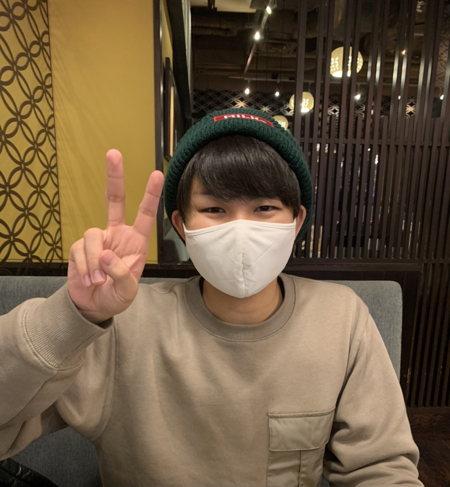

[自己紹介]
- ・名前 : 石田 歩夢(イシダ アユム)
- ・学校 : HAL 大阪 IT学部
- ・受賞歴 : HAL EVENT WEEK 企画力賞
- ・IT資格 : 基本情報技術者
- ・趣味 : 筋トレ
・ワイルドスピードと言う映画に出て来 る、俳優のドウェイン・ジョンソンの体に魅 了され、次の日にジムに入会しました
・去年の9月(時点では筋肉量37%)からトレーニングやり始め4ヶ月で筋肉量が15%UPしました！
・2022年1月末までにドウェイン・ジョンソンの体に近づけたいと思います。


・人が不便に感じている事や社会問題を解決出来るようなエンジニアになりたいです!!
・アルバイトでレジ金を6万円有るかを確認する際の業務改善した例が下記の内容です。